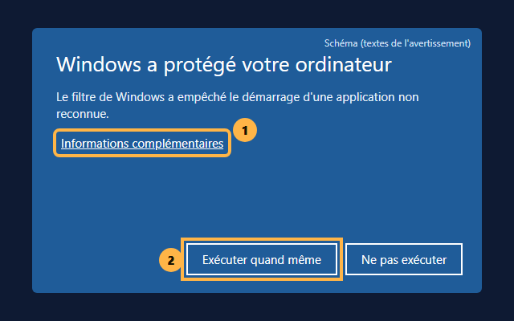

Le prof particulier qui navigue avec ton enfant
Exercices, mini-jeux et un capitaine qui explique pas à pas, sans donner la réponse tout de suite. Cap'taine s'adapte au rythme de chaque enfant et rend les révisions plus légères.
Gratuit pour toutes les familles. Sans compte, sans publicité, sans données envoyées.
Cap'taine est en plein développement. Il s'améliore chaque semaine et certains exercices peuvent encore contenir des erreurs. Tu en vois une ? Écris-nous à riisalthkraal@gmail.com, on corrige vite.
Tout pour réviser sans s'ennuyer
Quatre façons d'apprendre, toutes accessibles dès la première minute.
Des exercices du CP à la 3e
289 exercices et près de 2 900 questions dans 13 matières (maths, français, sciences, histoire-géo, langues…), avec des bouées qui mettent sur la voie sans donner la réponse.
19 mini-jeux
Course de calcul, tables, fractions en pizza, pendu, planètes, tri sélectif… pour s'entraîner en s'amusant.
Un capitaine qui explique
Demande un quiz, un jeu ou une explication : Cap'taine propose ce qu'il faut, même sans IA, et guide l'enfant pas à pas.
Une progression visible
Points, 48 badges à débloquer et « Mon voyage » pour voir ce qui est acquis et ce qui reste à travailler.
Ce qui a changé à bord
Un nouveau navire
Cap'taine a été entièrement redessiné : un bateau, des îles à explorer et une mascotte qui accompagne l'enfant.
Un chat qui propose, même sans IA
« Les tables », « un quiz », « je m'ennuie » : Cap'taine propose un quiz, un jeu ou un exercice adapté, sans aucune IA.
Explorer les autres classes
Revoir une notion d'une classe d'avant, ou jeter un œil à la suivante, sans changer de classe.
Le mode VS
Un défi chronométré contre Cap'taine : 30 secondes par question, le meilleur score gagne.
Des badges
48 badges à gagner en apprenant (et 7 autres bientôt), jamais en restant connecté le plus longtemps.
L'appli pour Windows
Cap'taine s'installe sur l'ordinateur et peut faire tourner une IA sur place, sans réglage compliqué.
L'IA n'est pas obligatoire.
Cap'taine fonctionne entièrement sans IA. L'IA est un plus, choisi par le parent, jamais activé tout seul. Avec Ollama, elle tourne sur votre ordinateur : les questions de votre enfant ne partent nulle part. Les modèles sans protections sont masqués.
- Sans IA : exercices, quiz, jeux et explications, rien ne quitte l'appareil
- Avec Ollama : une IA gratuite qui reste sur l'ordinateur ; l'appli Windows la démarre et l'arrête pour vous
- Avec la clé d'un fournisseur (OpenAI, Anthropic, Google) : seuls les messages du chat lui sont envoyés, et c'est le parent qui le choisit
Trois escales, et c'est parti
Choisis ta classe
Un prénom, une classe, et l'appli s'adapte. On peut changer de niveau à tout moment pour réviser ou se défier.
Fais tes exercices
Une question à la fois, une explication après chaque réponse, et des bouées de secours quand on bloque.
Demande à Cap'taine
Une notion pas claire ? On écrit sa question, et Cap'taine explique avec des exemples, sans faire le travail à la place de l'enfant.
Pour les parents
- Un accompagnement à la maison, toutes matières, du CP à la 3e
- Plusieurs profils d'enfants sur le même appareil
- Le suivi des progrès : réussites, points faibles, temps passé
- Pas de publicité, pas de compte obligatoire
Pour les enseignants En préparation
- Un espace classe avec code d'accès pour les élèves
- Le suivi de chaque élève et des notions difficiles
- Des exercices à assigner
Intéressé ? Écrivez-nous pour être prévenu du lancement.
Les données de ton enfant restent chez toi
Pas de compte obligatoire, pas de publicité, pas de pistage. La progression est enregistrée sur l'appareil de l'enfant.
- Progression et profils stockés sur l'appareil (dans le navigateur pour la version en ligne)
- Aucune mesure d'audience ni cookie publicitaire sur ce site
- Sans IA, ou avec Ollama, rien n'est envoyé. Avec la clé d'un fournisseur choisie par le parent, seuls les messages du chat lui sont envoyés.
Attention : dans la version en ligne, effacer les données de navigation efface aussi la progression. La sauvegarde dans un fichier arrive dans une prochaine version.
Prêt à larguer les amarres ?
Cap'taine fonctionne directement dans le navigateur, sur ordinateur, tablette et téléphone. Sur Windows, installez l'appli : elle fait aussi tourner l'IA Ollama sans réglage.
Version 2.4.0 · Windows 10 et 11 · environ 140 Mo · gratuit
Windows affiche « Windows a protégé votre ordinateur » ?
C'est normal pour une appli récente qui n'est pas encore signée : Windows ne la connaît pas encore. Cap'taine ne contient ni publicité ni pistage.
- Cliquez sur « Informations complémentaires ».
- Cliquez sur « Exécuter quand même ».
- Suivez l'installation. Pour une nouvelle version, installez-la par-dessus : les profils et la progression sont gardés.
